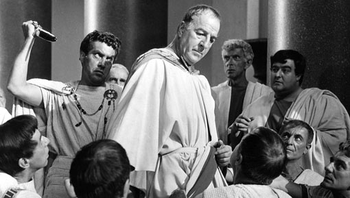
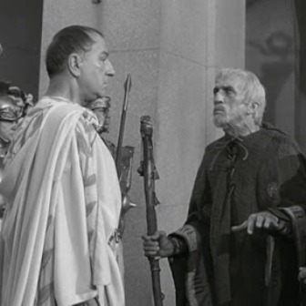
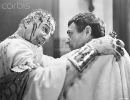

Times New RomanA Language Arts Original ProjectOUR RULER IS DEADEarlier In this morning our beloved ruler Julius Caesar set out on the day against the wishes of his wife Caphurnia. Also not heeding the warning of the soothsayer. Brutus convinced Caesar that Calphurnia's visions were in fact of nothing saying,"It was a vision fair and fortunate. your statue spouting blood in mant pipes, In which so many smiling Romans bathed, Signifies that from you great Rome shall suck Reviving blood, and that great men shall press For tinctures, stains, relics and cognizance. This by Calpurnia's dream is signified." This made Caesar exclaim,"How foolish do your fears seem now, Calpurnia! I am ashamed I did yield to them." After this he set forth, essentially sealing his fate.  He arrived at the street in front of the Capitol along with his men and said to the soothslaying standing on the steps,"The ides of March are come." To which he replied,"Ay, Caesar; but not gone." Then Artemidorus attepted to warn Caesar by having him read a letter showing who to watch out for, saying,"Hail, Caesar! read this schedule. That touches Caesar nearer: read it, great Caesar." Caesar Replied with things like,"What touches us ourself shall be last served.""What, is the fellow mad?" Caesar had ignored every sign and warning so far and did the same with Artemidorus'. HOW AND WHYOnce in the capital Caesar was surrounded by his men, some of whom were conspiring to kill him in the commng minutes. Caesar is planing to punish Publius Cimber, brother of Metellus Cimber. Metellus kneels, pleeding for his brother's freedom |